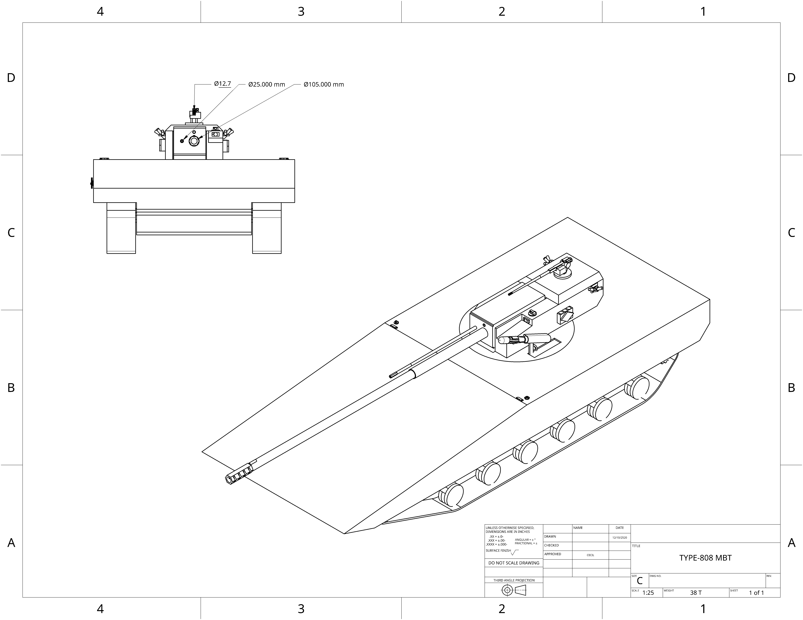

home
UCSC MBT:
Armed with a 105mm electrochemicalthermal smoothbore cannon, 25mm coaxial chaingun, six HEEMP 120 loitering munition packages
and a roof mounted .50 caliber machine gun, the UCSC main battle tank manages to weigh just over 38 metric tons. This is due to the
advanced carbyne based composites that make up its armor as well as its exeptionally light weight active protection system.

- Main armament: UCSC L55, 105mm ETC (Sabot, HE)
- Secondary armerment:25mm chaingun (EMPHE, SABOT)
- Secondary armerment: .50 roof mount
- Secondary armerment:UCSC 120mm drone pod(x6 Drones)
- Shielding capabilities: X1 GiggaJoules
- Auxillary capabilities: MACE Active protection system, 6 HEEMP 120 loitering munitions
- Armor(Hull): Front-2000mm,Sides-400mm,Back-100mm
- Speed: 120 Kph Forward 120 Kph Back
- Tonnage: 38 Metric tons